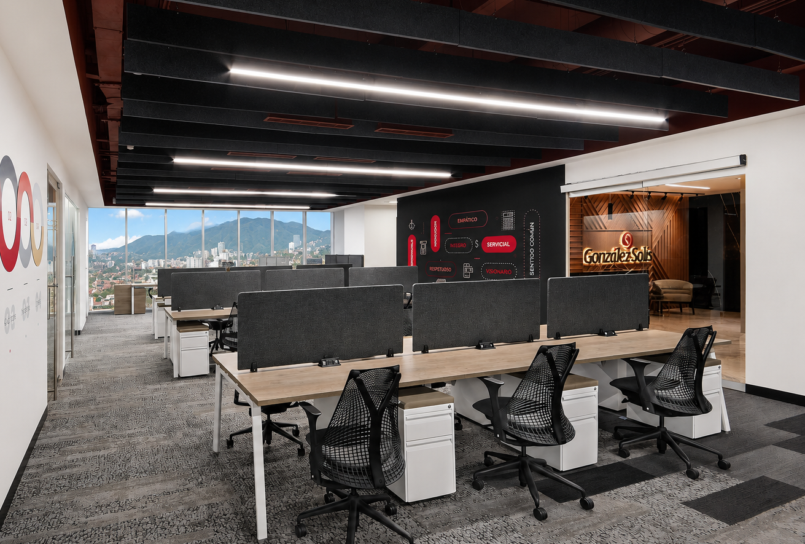

Auditoría
Revisión y evaluación para dar mayor claridad sobre información financiera, controles y riesgos.
Adaptamos los alcances de nuestros servicios de acuerdo con los requerimientos de las autoridades según la industria.

Un solo recorrido comunica amplitud de servicio, experiencia y orientación a resultados.


La propuesta mantiene los ocho servicios principales de la firma, pero los presenta con una composición más visual para que el usuario identifique rápido el área que necesita.
Revisión y evaluación para dar mayor claridad sobre información financiera, controles y riesgos.
Orden contable, cumplimiento operativo y acompañamiento para una administración más confiable.
Soporte legal empresarial para operación, contratos, estructura corporativa y toma de decisiones.
Cumplimiento, revisión y acompañamiento en obligaciones fiscales de empresas y grupos.
Estrategias y análisis fiscal para decisiones empresariales, administración de riesgos y planeación.
Análisis y documentación para operaciones entre partes relacionadas y estructuras corporativas.
Acompañamiento legal para operaciones con componente internacional, inversión y expansión.
Diagnóstico, análisis y proyección para fortalecer decisiones financieras y crecimiento empresarial.


La entrega, el profesionalismo y la calidad son tres valores que nos han caracterizado desde entonces, mismos que sientan las bases en la confianza que nuestros valiosos clientes nos brindan.
En 1974, gracias a la visión de nuestro fundador, el C.P. Aurelio González Solís, inicia nuestro camino ofreciendo servicios de contabilidad a empresas de múltiples giros de negocio
Estos bloques ayudan a que cada visitante se identifique con una situación de negocio antes de llegar al formulario.

Orden, cumplimiento y decisiones patrimoniales con visión de largo plazo.

Soporte fiscal, legal, contable y financiero para estructuras complejas.

Procesos claros, asesoría estratégica y acompañamiento para escalar.

Análisis y estructura para decisiones fiscales, legales y financieras.

Esta sección puede reemplazarse por fotos reales del equipo de GS. Ayuda a reforzar confianza y a que la firma se perciba más tangible.

Visibilidad para áreas internas, socios o líderes de práctica.

Bloques pensados para comunicar experiencia, cercanía y confianza.

Ideal para destacar perfiles profesionales o unidades de negocio.
Los artículos convierten el sitio en un canal comercial activo: educan, posicionan y dan razones para contactar.

Un bloque editorial para temas coyunturales y guías prácticas.

Contenido especializado para atraer leads de alto valor.

Señala experiencia y abre rutas hacia servicios de consultoría.

Fotografía de oficina o sala de juntas para cerrar con un tono cercano y profesional.
Formulario breve y datos visibles para que el usuario no tenga que buscar cómo contactar a la firma.